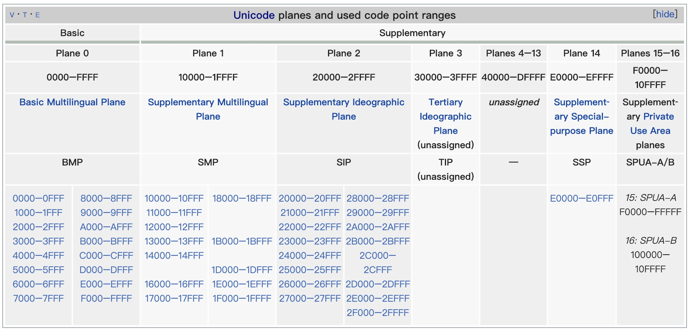

在处理用户输入的内容时候，有些场景不希望输入 emoji，在 iOS 中如何检测 emoji？结合网上的一些资料，我总结一下识别 emoji 的方法，在介绍 emoji 之前先了解下字符集和字符编码相关的基础知识。
Unicode 字符集
Unicode 标准为世界上几乎所有的[1]书写系统里所使用的每一个字符或符号定义了一个唯一的数字。这个数字叫做码点（code points），以 U+xxxx 这样的格式写成，格式里的 xxxx 代表四到六个十六进制的数。
最初，Unicode 编码是被设计为 16 位的，提供了 65,536 个字符的空间。后来，考虑到要编码历史上的文字以及一些很少使用的日本汉字和中国汉字，Unicode 编码扩展到了 21 位（从 U+0000 到 U+10FFFF）。所以，我们现在接触到的 Unicode 是 21 位的编码。
编码空间被分成 17 个平面（plane），每个平面有 65,536 个字符。

0 号平面叫做「基本多文种平面」（Basic Multilingual Plane, BMP），涵盖了几乎所有你能遇到的字符。其它平面叫做补充平面，大多是空的。
UTF 编码
Unicode 定义了字符到码点的映射，具体如何在计算机上存储，就需要使用 UTF （Unicode Transformation Formats，简称 UTF）编码了。常见的编码格式有 UIF-32、UTF-16 和 UTF-8，看名字就知道它们含义，32、16、8 表示用于存储的长度。使用 32 位存储一个码点（码点长度 21 位）太浪费空间了，现实中很少使用。UTF-16 使用 16 位固定长度的码元，BMP 的范围在 0000-FFFF 之间，一个码点直接与一个码元相映射，使用 UTF-16 比 UTF-32 节省一半的空间。其它平面的字符超过了 16 位的表示范围，可以使用两个 UTF-16 码元组合起来表示，叫做代理对（surrogate pair）。NSString 使用的就是 UTF-16 编码存储字符串，下面会详细介绍。UTF-8 的用途更广泛，已经是文件格式、网络协议以及 Web API 领域里事实上的标准了，它与 emoji 的关系不大，这里不做详细介绍了。
NSString 存储
NSString 对象代表的其实是用 UTF-16 编码的码元组成的数组。相应地，length 方法的返回值也是字符串包含的码元个数（而不是字符个数）。试着打印 😛(U+1F61B) 的长度，输出 2。因为 U+1F61B 超出了 BMP 的范围，需要使用两个 UTF-16 码元组合成代理对表示。
NSString *emoji = @"😛";
NSLog(@"emoji.length: %@", @(emoji.length)); // emoji.length: 2
在工作中经常会遇到限制用户输入字符个数的需求，比如要求用户名最长不超过 10 个字符，一般情况下使用 length 判断就可以了，如果用户输入了 emoji 表情，使用 length 判断可能就不符合要求了。用户输入了 3 个 👨🏻⚕️（1F468 1F3FB 200D 2695 FE0F），打印出length 的长度是 21（每个 👨🏻⚕️ 长度为: 2 + 2 + 1 + 1 + 1），已经超过 10 ，提示用超长了肯定不合理。如何判断字符长度呢？enumerateSubstringsInRange:options:usingBlock: 方法以字符为单位进行遍历，使用这个方法可以统计字符真正的长度。
NSString *emoji = @"👨🏻⚕️👨🏻⚕️👨🏻⚕️";
NSLog(@"length: %@", @(emoji.length)); // length: 21
__block NSUInteger realLength = 0;
[emoji enumerateSubstringsInRange:NSMakeRange(0, emoji.length) options:NSStringEnumerationByComposedCharacterSequences usingBlock:^(NSString * _Nullable substring, NSRange substringRange, NSRange enclosingRange, BOOL * _Nonnull stop) {
NSLog(@"==> subRange:%@, subStr:%@", NSStringFromRange(substringRange), substring);
realLength += 1;
}];
NSLog(@"realLength: %@", @(realLength)); // realLength: 3
emoji
从维基百科了解到目前 emoji 已经更新到 11.0，总共有 1212 个单码点的表情，还有更多的表情可以通过多个码点组合而成。具体的组合方式有：
- Emoji_Keycap_Sequence: 普调的字符
#*0123456789加上 FE0F 20E3 就变成了 #️⃣*️⃣0️⃣1️⃣2️⃣3️⃣4️⃣5️⃣6️⃣7️⃣8️⃣9️⃣。 - Emoji_Flag_Sequence: 国旗表情，这类 emoji 串是通过两个地域指示符（regional_indicator）组合的方式来表示一个国家的国旗。如 🇿🇼(1F1FF 1F1FC)，总共 258 个。
- Emoji_Modifier_Sequence: 不同肤色的表情，如 ☝️(261D) 加上 1F3FF 就变成了 ☝🏿(261D 1F3FF)，这类不同肤色的表情有 530 个。
- Emoji_ZWJ_Sequence: 通过 ZWJ 字符（U+200D， Zero Width Joiner）将基本 emoji 字符或 Emoji_Modifier_Sequence连接起来，形成一个新的 emoji 表示样式，如 👨❤️👨(1F468 200D 2764 FE0F 200D 1F468) 由 👨(1F468) + ❤️(2764 FE0F) + 👨(1F468) 组合而成。这表情是表示一对基友么？
- Emoji_Tag_Sequence: 只有三个 🏴、🏴、🏴。
- Emoji_presentation_sequence: 即由基本 emoji 字符加上 U+FE0F 组合而成 emoji 序列串。例如 ❤️(U+26A1 U+FE0F)。
识别字符串中的 emoji
emoji-data.txt 的第一个表格中包含了所有的单码点，总数是 1250，除去 #*、0-9和 a-z 正好 1212 个。多码点 emoji 也是由单码点 emoji 追加一些特殊字符组合而成，所以只要字符的第一个码点在这个表格罗列的码点范围内，就可以判定它是 emoji。
第一步，提取表格中的码点。我用 Python 写了一个简单的脚本格式化码点范围，输出一个数组复制到 OC 代码中使用。
#!/usr/bin/env python3
# -*- coding: utf-8 -*-
import sys
import os
# 使用方法， python3 getEmojiData.py emoji-data.txt emoji-all-data.txt
readPath = os.path.join(os.path.abspath('.'), sys.argv[1])
resultStr = ''
with open(readPath, 'r') as f:
for line in f.readlines():
codeStr = line.partition(';')[0]
if len(codeStr.rstrip()) == 0:
continue
pointList = codeStr.rstrip().split('..')
formatPair = ''
if len(pointList) == 1:
formatPair = '{0x%s, 0x%s},' % (pointList[0], pointList[0])
else:
formatPair = '{0x%s, 0x%s},' % (pointList[0], pointList[1])
resultStr = resultStr + '\n' + formatPair
writePath = os.path.join(os.path.abspath('.'), sys.argv[2])
with open(writePath, 'w') as f:
f.write(resultStr)
在 OC 代码中创建一个结构体数组，类似下面这样：
typedef struct {
uint32_t start;
uint32_t end;
} CodePair;
static CodePair CodePairList[] = {
{0x00A9, 0x00A9},
{0x00AE, 0x00AE},
{0x203C, 0x203C},
xxx
};
第二步，遍历字符串中的字符，提取字符的第一个码点，判断是否在范围内。要区分两种情况，emoji 是单码点的，如 ©️(U+00A9)，直接用 characterAtIndex 取码点；大部分 emoji 的码点数 >= 2，直接使用 characterAtIndex 就不行了。例如😀(1F600)，打印出来得结果是：
NSString *emoji = @"😀";
NSLog(@"%x, %x", [emoji characterAtIndex:0], [emoji characterAtIndex:1]); // d83d, de00
Unicode 中有 17 个平面，在第 0 平面中，有一个特殊的代理区域，不表示任何字符，只用于指向第 1 到第 16 个平面中的字符，这段区域是：D800—DFFF.。其中 0xD800—0xDBFF 是前导代理(lead surrogates)，0xDC00—0xDFFF 是后尾代理(trail surrogates)。具体的公式：0x10000 + (前导-0xD800) * 0x400 + (后导-0xDC00) = utf-16编码
NSString *emoji = @"😀";
const unichar hs = [emoji characterAtIndex:0];
if (0xd800 <= hs && hs <= 0xdbff) {
if (emoji.length > 1) {
const unichar ls = [emoji characterAtIndex:1];
const int uc = ((hs - 0xd800) * 0x400) + (ls - 0xdc00) + 0x10000;
NSLog(@"%x", uc); // 1f600
}
}